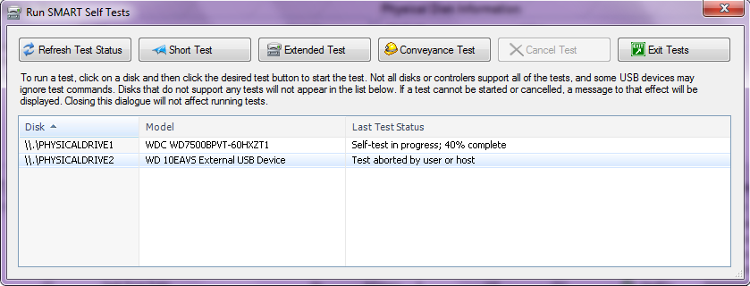

Disk Self-Testing
Most hard drives on the market and some SSDs support internal self-tests which may be initiated by the user. These tests can be run to have the disk perform some internal diagnostics and then report back success or failure. If you suspect a disk of having problems, even if the SMART information appears healthy, you can run a self-test on the disk to see if the disk itself detects a problem.
SMART-capable disks typically make available one or more of three common self tests: short, extended and conveyance.

Not all disks support all three tests, and some disks don't support any tests at all. If WindowSMART does not detect any supported tets on a disk, that disk will not be shown in the list of disks that can be tested. In the example window above, you may notice there is no \\.\PHYSICALDRIVE0 shown. This disk is not shown because it is an SSD which does not support user self testing.
Short Test
Checks the electrical and mechanical performance as well as the read performance of the disk. Electrical tests might include a test of buffer RAM, a read/write circuitry test, or a test of the read/write head elements. Mechanical test includes seeking and servo on data tracks. Scans small parts of the drive's surface (area is vendor-specific and there is a time limit on the test). Checks the list of Pending sectors that may have read errors. A short self-test typically takes about 2 minutes to complete.
Extended (Long) Test
A longer and more thorough version of the short self-test, the extended test scans the entire disk surface, with no time limit. For large drives this test can take several hours. A good rule of thumb is 1 minute per GB. If you choose to run an extended test, WindowSMART will inform you of the manufacturer-specified time the test is expected to take. If the disk has electrical or mechanical problems, the test could take significantly longer, although a serious problem could cause the disk to abort the test after just a few minutes.
Conveyance Test
The conveyance test is intended as a quick test to identify damage incurred during transporting of the device from the drive manufacturer to the computer manufacturer. In other words, if the disk was subjected to rough handling or was dropped, it may have suffered internal physical damage that the conveyance test can detect. If you suspect your disk has been handled roughly or dropped, the conveyance test is a good test to run.
Cancel Test
If you want to abort a test that is in progress, select the disk in question and click Cancel Test.
Test Results
WindowSMART will display whether a test is in progress (and a percentage complete), or the last test status. A drive does not store which test was last run. Rather it simply stores a flag that indicates whether a test is running or the last test result.
The code returned by the drive is never shown to you. Only the status message is shown. Below is a table that lists the status codes and the corresponding messages you can expect to see.
| Code | Status Message | Notes |
| 0 | Successfully completed (or no test ever run) | |
| 1 | Test aborted by user or host | |
| 2 | Test interrupted by hardware/software reset from host | Typically caused by a power cycle or reboot |
| 3 | Self-test did not complete due to a fatal drive error | |
| 4 | Self-test failed: Unknown Element | |
| 5 | Self-test failed: Electrical Element | |
| 6 | Self-test failed: Servo and/or Seek Element | |
| 7 | Self-test failed: Read Element | |
| 8 | A test element failed that suggests handling damage | |
| 9-14 | Drive returned status code X | These are highly unlikely |
| 15 | Self-test in progress; XX% complete | The test is still running |
The failure of any self-test (codes 3-8) would indicate your disk is likely in need of replacing. If you get a status code 9-14, you would need to check with the disk vendor to determine the meaning of the code. If you get any undesired result and the disk is under warranty, you may want to back up any data on the disk, then seek an RMA to get the disk replaced. Some vendors may require you to run their own testing tools; if this is required for your disk, back up the data on it and then run the vendor-provided testing tool.